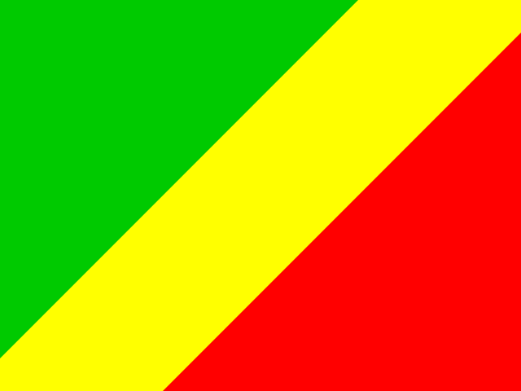

Countries › Oceania
Vanuatu
Where Vanuatu stands out
▲ MOST
2nd Gabon12.5
Gabon12.5
3rdVanuatu12.4
4th Senegal12.2
Senegal12.2
3rd of 171 · Food and Agriculture Organization (FAO) Food Balance Sheets, 2023
▲ MOST
16th

Congo36,78517thVanuatu31,944
18thFiji31,052
17th of 180 · Food and Agriculture Organization water database (AQUASTAT), via World Bank, World Development Indicators (WDI), 2022
▲ MOST
21stSaint Vincent and the Grenadines215,938
22ndVanuatu207,400
23rd Bahrain201,250
Bahrain201,250
22nd of 192 · Central Intelligence Agency (CIA) World Factbook and World Bank (derived), 2024
▲ MOST
24th Oman141
Oman141
25thVanuatu138
26th Mexico137
Mexico137
25th of 171 · FAO Food Balance Sheets, 2023
Size, sea and borders
12,189 km²156th of 195
2,528 kilometres (km)42nd of 193
Coastline for its sizeCIA World Factbook and World Bank (derived), 2024 · web.archive.org (cia.gov)
207,400 m per 1,000 km²22nd of 192
Number of land bordersGeoNames, 2026-08 · download.geonames.org
0158th of 195, tied with 37
Land and height
1,877 m124th of 194
Rainfall a yearFAO, via World Bank, WDI, 2022 · data.worldbank.org
2,000 millimetres (mm)32nd of 179
Fresh water per personAQUASTAT, via World Bank, WDI, 2022 · data.worldbank.org
31,944 m³17th of 180
75.4% of land9th of 192, tied with 1
Orchards and plantationsFAO, via World Bank, WDI, 2023 · data.worldbank.org
8.2% of land32nd of 189
People
320,409 people173rd of 195
Population densityWorld Bank, WDI, 2023 · data.worldbank.org
26.3 people per km²157th of 192
20.1 years155th of 195
71.5 years120th of 195, tied with 1
Dependants per 100 people 15-64UN World Population Prospects 2024, via World Bank, WDI, 2023 · data.worldbank.org
74.932nd of 194
Food, power and travel
Fish & seafood supplyFAO Food Balance Sheets, 2023 · bulks-faostat.fao.org
30.0 kg per person a year28th of 171
95.0 kg per person a year26th of 170
138 kg per person a year25th of 171
12.4 kg per person a year3rd of 171
31114th of 189
Football and chess
Football internationals played, all timeInternational football results (martj42), 2026 · github.com
214159th of 193, tied with 1
See all 124 facts about Vanuatu
Showing 20 highlights for Vanuatu. Rank counts from the highest value among the countries that have data: 1st is the most. Ties share a rank. Data version 91, 22 November 2026.
Sort Vanuatu against four others
The game has figures for Vanuatu on 164 of its 190 questions.
The same game for Android and iOS. It launches on 10 December 2026.
Out now.